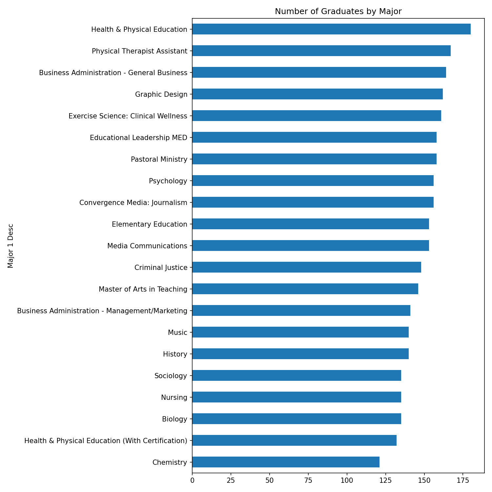
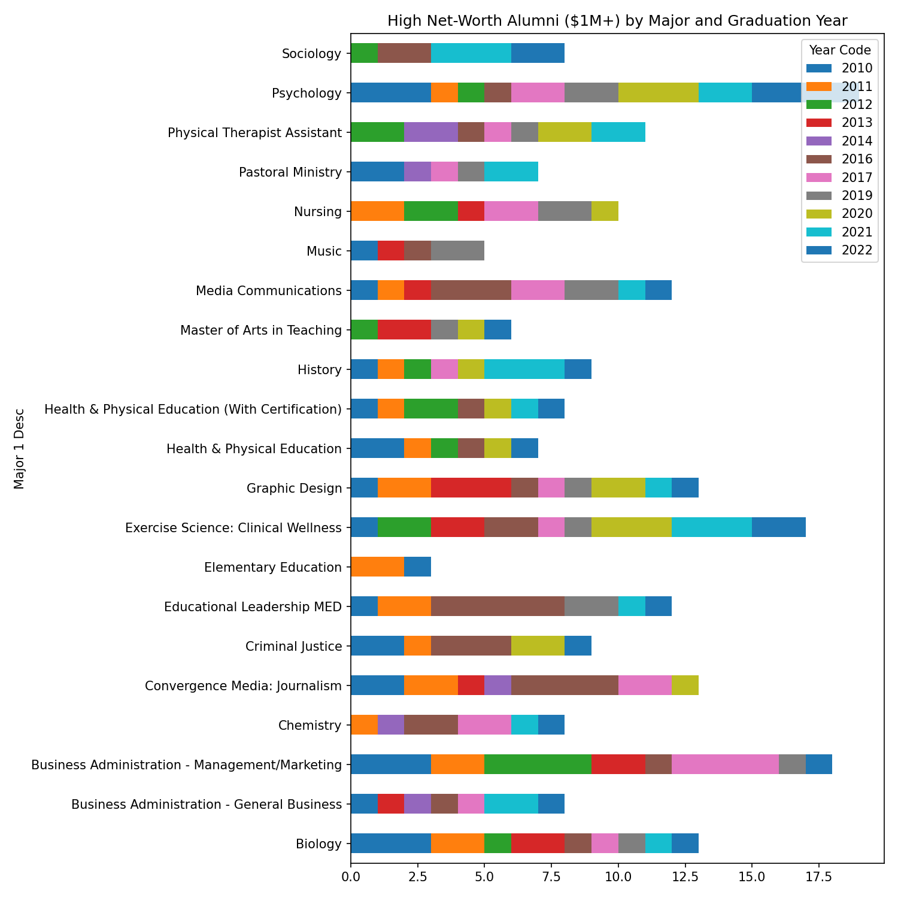
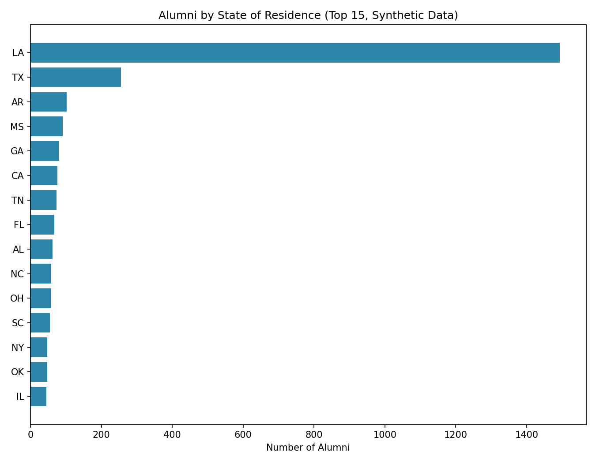

Data cleaning and exploratory analysis of a university alumni dataset — decoding enrichment-service demographic codes, joining fields, and analyzing giving-capacity indicators by major and geography. Originally my MBA capstone project.
Universities receive alumni and prospect data from third-party enrichment services in a coded format — income, net worth, homeownership, and years-at-residence are represented as single letters rather than readable values. Before this data can be used for anything (fundraising segmentation, outreach targeting, reporting), it has to be decoded, cleaned, and joined with academic records (major, GPA, graduation year).
Graduate counts by major, showing program size distribution across the dataset:

High net-worth alumni ($1M+) by major and graduation year, surfacing which programs have historically produced the highest concentration of high-net-worth graduates — useful for fundraising and development prioritization:

Geographic distribution of alumni by state of residence (top 15):

The original project also built this geographic view as an interactive Tableau dashboard.